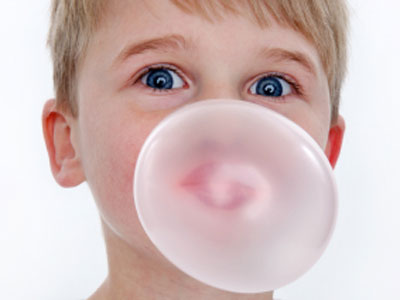

Welcome to the Classic Bubble Gum Company
We here at the Classic Bubble Gum Company are committed to sharing the memories of enjoying a good piece of bubble gum with all generations. Whether it was buying a pack from the corner market on the way home from school, or hours of hanging out with your friends blowing head sized bubbles, or chewing a nice size chunk while at the ball park, the enjoyment of bubble gum continues to be an important thread in the fabric of life in America.
We have a large selection of classic bubble gum from the oldest bubble gum companies in America. Our selection of bubble gums are of the highest quality, and they are produced by great American companies that have generations of experience making bubble gum. These classic bubblegums are nostalgic, and yet still a favorite enjoyment of today's generations.
Where Bubble Gum is a Life Style!
The Classic Bubble Gum Company is a great American company that has been selling bubble gum for over a 100 years. It all started on the corner of Main Street and 1st street in the great American town of Maysville, Kentucky, and it has grown into one of the biggest distributor of bubble gum products in the world! CBGC specializes in distributing the highest quality bubble gums from the most established U.S. companies. Click here to visit our online store today!